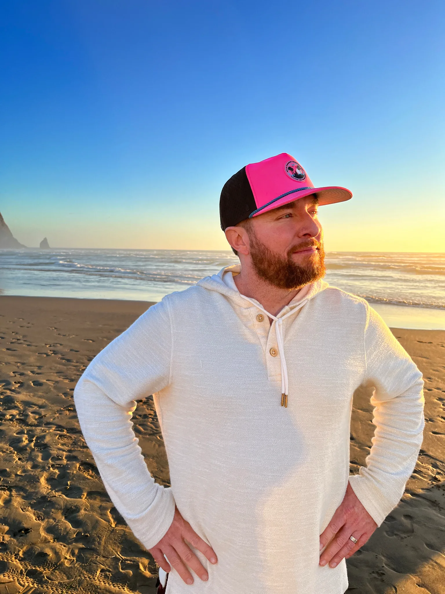
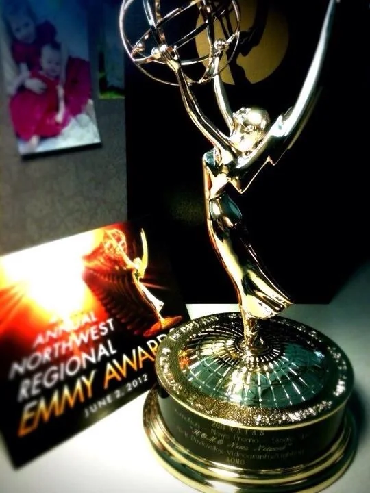
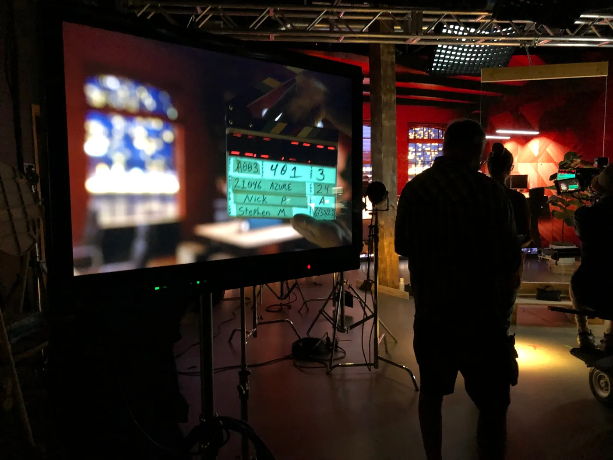
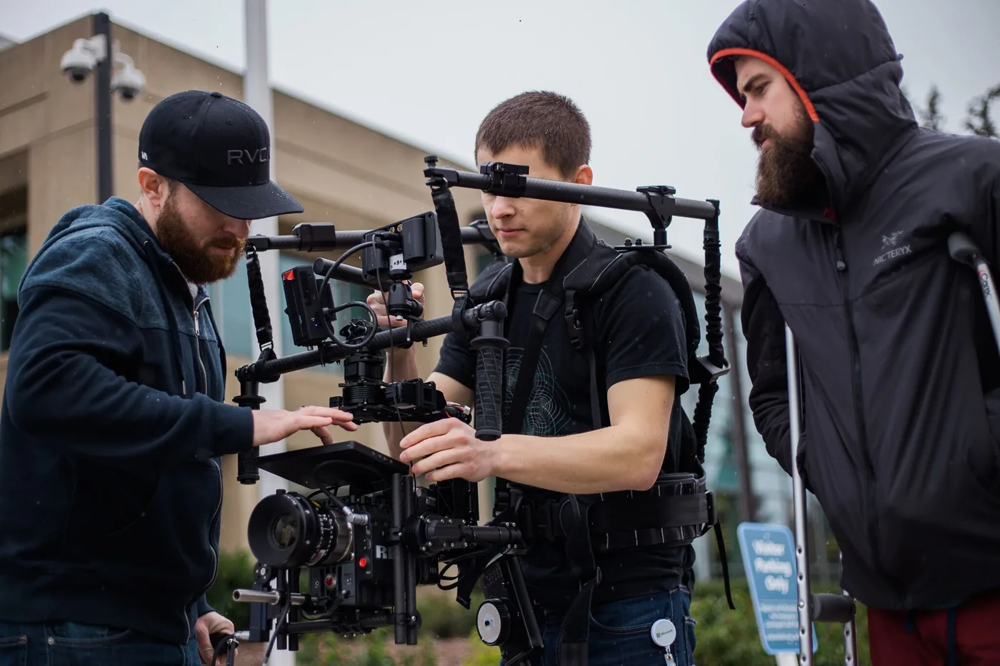
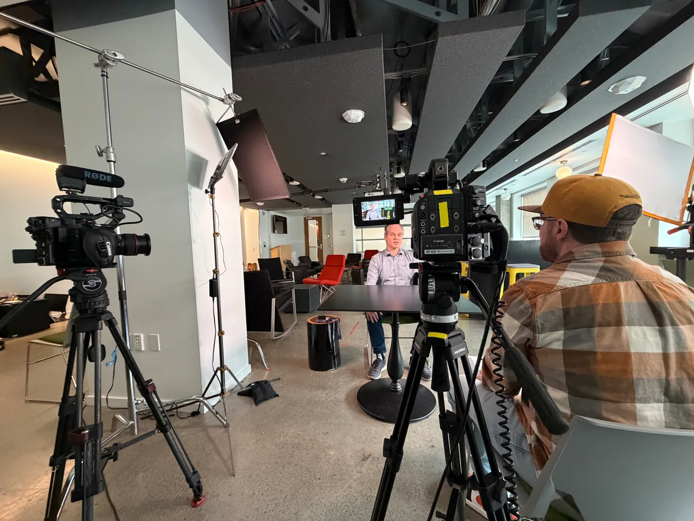
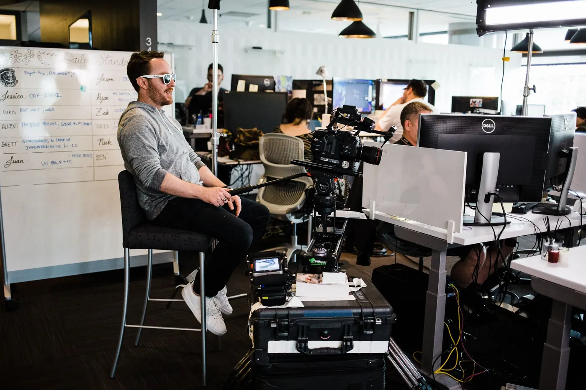
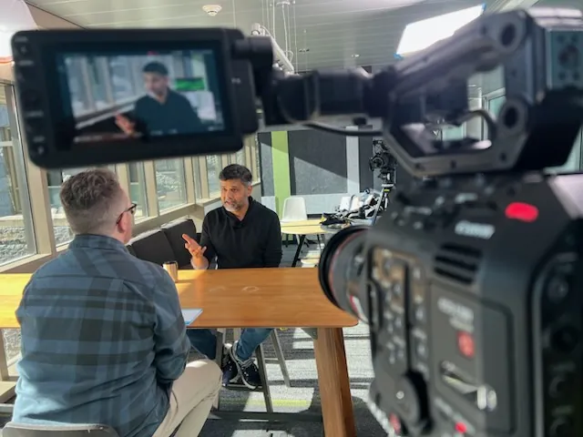
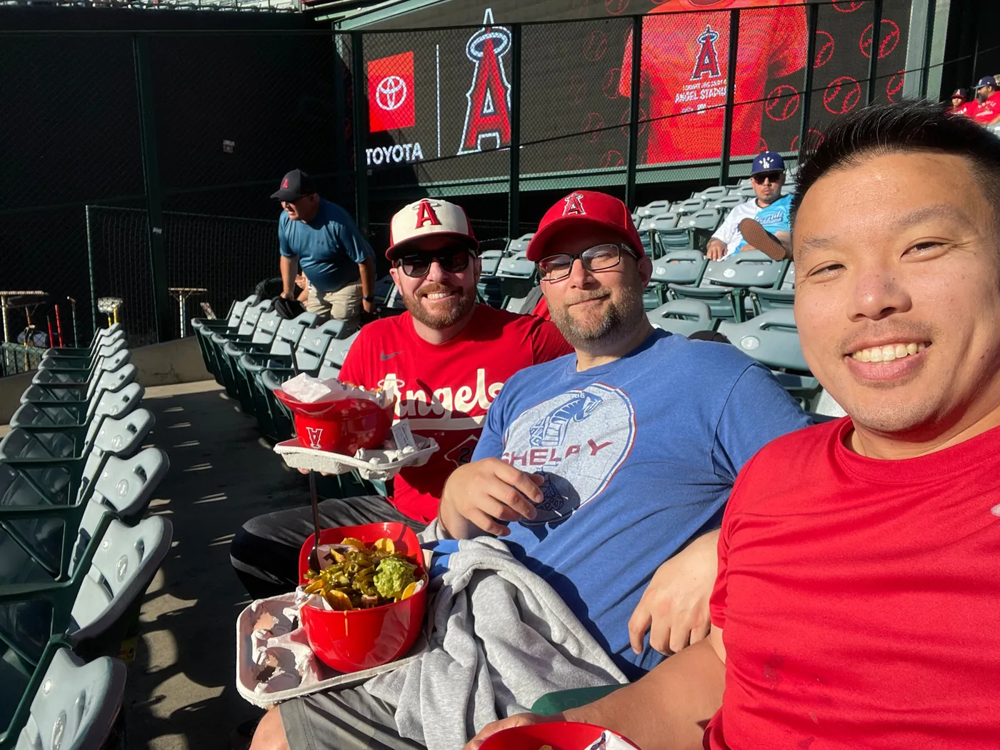

Four projects that capture the range, from keynote spectacle to original series and product storytelling.
A high-impact keynote film built for a big stage and an even bigger storytelling moment.
▶ Watch on Vimeo 02 · 5-EPISODE SERIESFood opens the door to ideas, culture, technology, and surprisingly good conversations.
▶ Watch the playlist 03 · VISION VIDEOTurning a complex technical story into a human view of what becomes possible.
▶ Watch on Vimeo 04 · LAUNCH VIDEOA launch story designed to make an emerging retail experience tangible.
▶ Watch on Vimeo
Three Emmy Awards. Countless exports. Still convinced every project deserves one more thoughtful pass.
Four years of opening team meetings with dad jokes. Nobody asked for it. Nobody stopped it.
Cameras, lights, audio, edits, retakes, and occasionally controlled chaos. This is where the stories get made.





Choose the agenda item most likely to appear in the conversation.

Fell in love with Angels games as a Little Leaguer, watched the 2002 World Series win, and still counts Mike Trout as a favorite player. Recent seasons have mostly been an advanced course in resilience.
If you see an opportunity for a high-impact storytelling moment, let’s make it happen. Reach out when you need help with anything video-related.